Toutes vos sessions Claude Code,
une seule fenêtre.
Claude Sessions réunit vos sessions Claude Code dans une application : vous voyez d'un coup d'œil celles qui travaillent, celles qui vous attendent, et vous répondez sans changer de fenêtre. Elles reviennent seules après un redémarrage, et vous suivent d'une machine à l'autre.
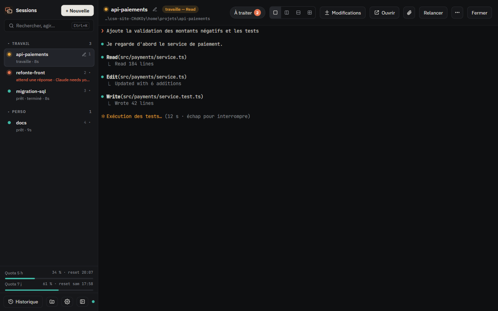
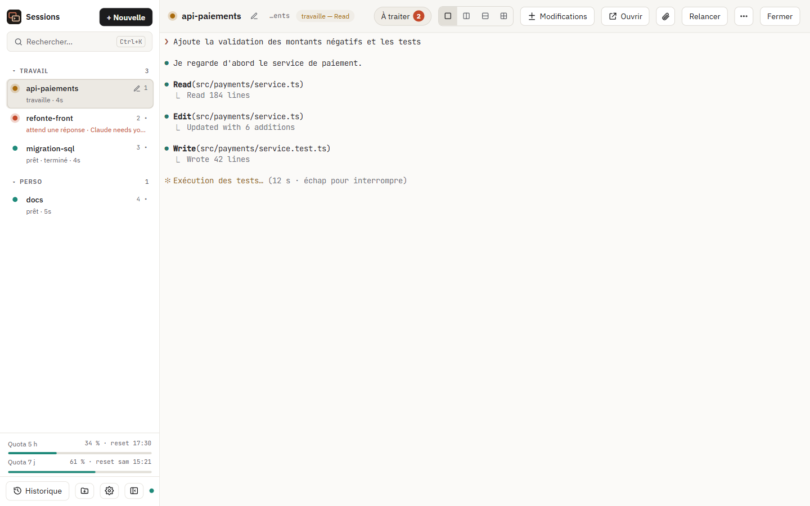
Nouveautés 3.33 → 3.35
Une refonte complète, pensée pour travailler à plusieurs Claude
Nouvelle interface « Atelier », un endroit pour tout ce qui vous attend, l'usage de Claude en un coup d'œil, et des extensions pour ajouter vos propres types de session sans écrire de code.
Interface Atelier
Graphite et argile, ou ivoire. IBM Plex Sans et JetBrains Mono intégrées, icônes dessinées, barre latérale avec groupes et quotas toujours visibles. Suit le thème du système.
Centre d'attention
Toutes les demandes de vos sessions au même endroit : autorisez, refusez ou relisez sans changer de session. Les commandes risquées sont signalées.
Usage de Claude
Temps de travail de Claude (dont celui « sans vous »), coût estimé, quota 5 h avec prévision de la limite, tâches planifiées et détail par session.
Extensions
Un fichier .csm.json ajoute modèles, prompts et types de session avec leur propre affichage et leurs actions. Partageable en privé, aucun code exécuté. Une extension peut demander un jeton d'accès au démarrage, avec le lien pour l'obtenir.
Synchro étendue
En plus des sessions et de leurs conversations : groupes, modèles, extensions et plugins Claude Code. Vous choisissez quoi synchroniser.
Pastille et notifications
Le nombre de sessions qui vous attendent sur l'icône de l'app (Windows et macOS), notifications système cliquables, mises à jour sur Mac sans mot de passe.
Connexion renouvelée
« Your login expires in 3 days » : l'app prévient à l'avance et renouvelle la connexion de Claude en un clic. Plus de session bloquée sur /login.
Claude répond en français
Les sessions répondent dans la langue de l'interface, ou celle de votre choix. Un changement s'applique aussi aux sessions déjà ouvertes.
Vue partagée
Quatre Claude côte à côte, une seule barre pour leur parler
Suivez 2 à 4 sessions en même temps : deux colonnes, deux lignes ou une grille. Glissez une session sur un panneau, passez de l'un à l'autre au clavier.
- Envoi groupé : le même message à tous les panneaux visibles
- « En file si occupée » : il attend que Claude ait fini
- Une autorisation ? Oui / Toujours / Non directement dans le panneau
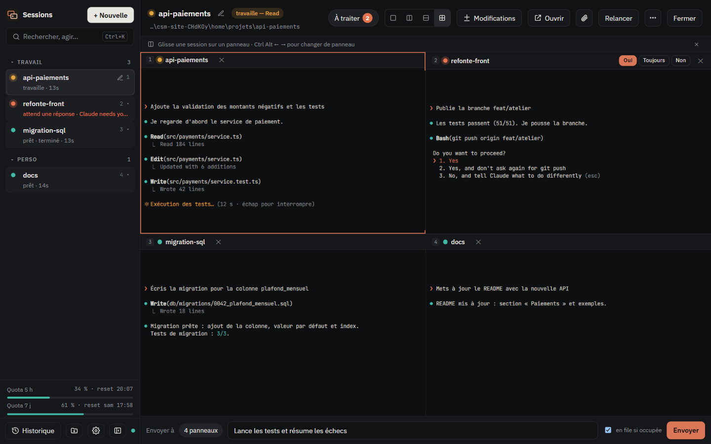
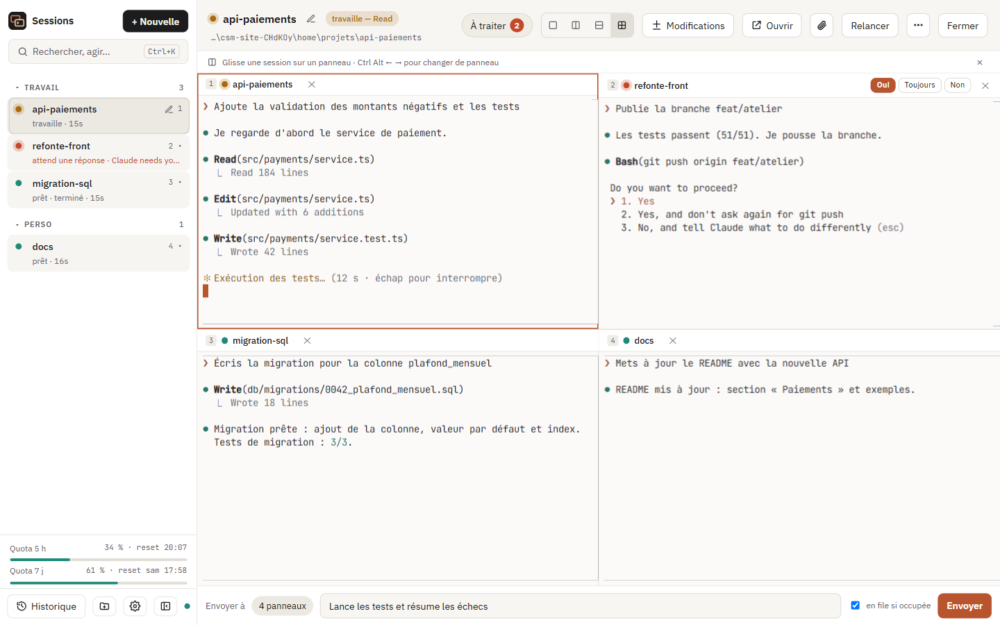
Centre d'attention
Tout ce qui vous attend, au même endroit
Une autorisation dans une session, une réponse terminée dans une autre : le centre d'attention les rassemble avec le contexte utile. Vous répondez sans quitter ce que vous faites.
- Autoriser, « toujours pour ce projet » ou refuser, comme au clavier
- Commandes risquées repérées (push, suppression, déploiement…)
- Résultats à relire, marqués comme vus d'un clic
Ctrl/⌘+Alt+I ou le bouton « À traiter » de la barre du haut.
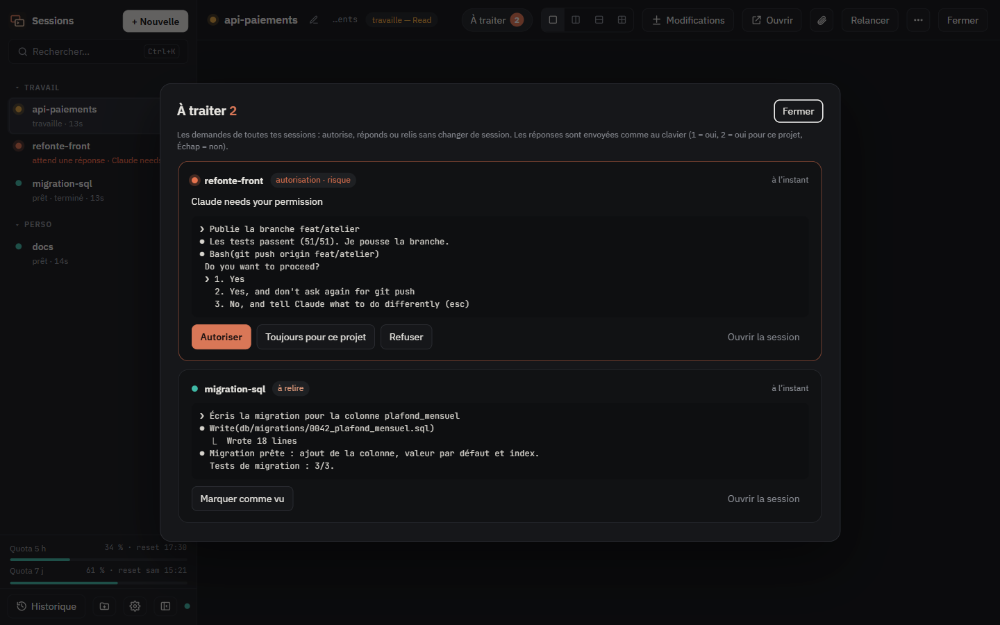
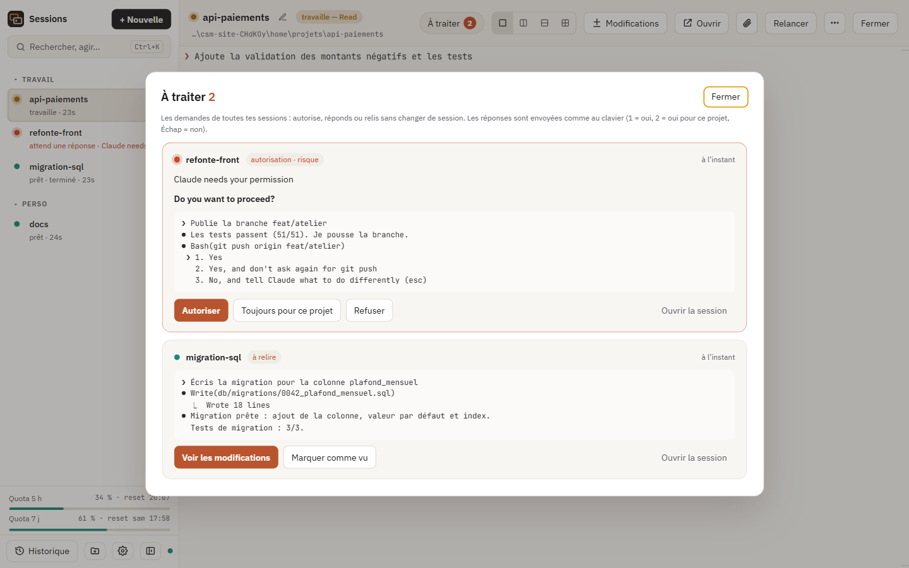
Usage de Claude
Votre quota, avant qu'il ne vous surprenne
Le tableau de bord du jour : sessions actives, demandes en attente, temps de travail de Claude et coût estimé. La courbe du quota 5 h prévoit l'heure de la limite au rythme actuel.
- Quotas 5 h et 7 jours toujours en bas de la barre latérale, même avec votre propre barre d'état
- La file d'attente se met en pause près de la limite, puis repart
- Prévision aussi pour le quota 7 jours ; période jour, 7 ou 30 jours
- Toutes vos machines additionnées (totaux chiffrés, jamais de conversation)
Ctrl/⌘+Alt+U, ou un clic sur les quotas.
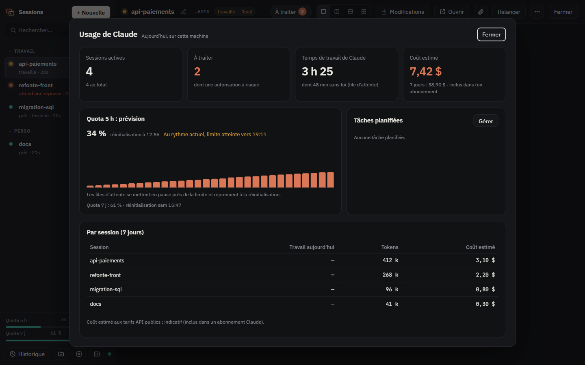
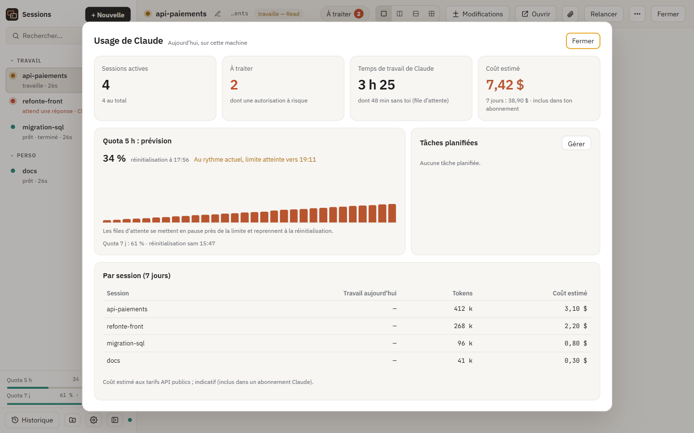
Extensions
Vos propres types de session, en un fichier
Une extension est un simple fichier .csm.json : modèles de session, prompts, et types de session qui donnent à Claude des consignes et affichent son résultat dans une vue dédiée (tableaux, listes à cocher, alertes…), avec des boutons d'action.
- Aucun code exécuté : un format déclaratif, affiché en texte
- Importez un fichier, ou collez un lien GitHub (fichier, dossier, dépôt, gist), même privé
- Ou fournie par un plugin Claude Code, qui l'apporte avec ses skills
- Synchronisée avec vos autres machines si vous le souhaitez
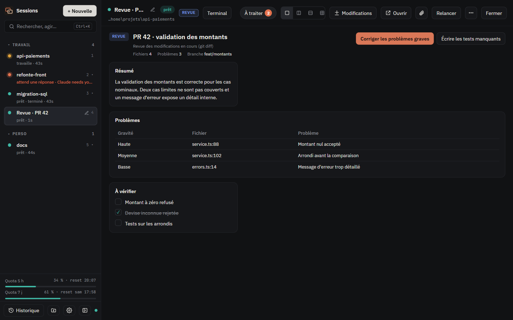
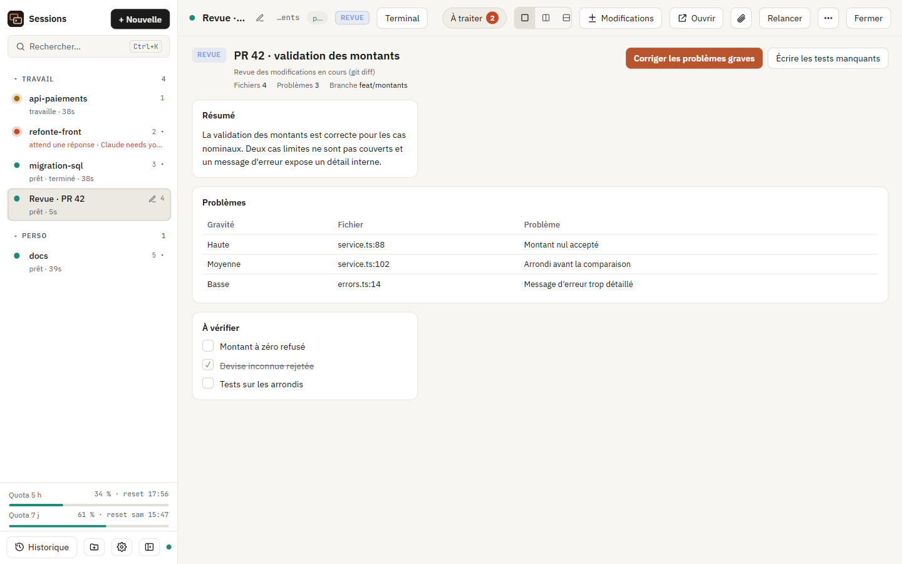
Modèles
Une session prête en un clic
Partez d'un modèle : dossier, modèle de Claude, mode d'autorisation, worktree git, groupe et premier prompt. Les modèles des extensions apparaissent au même endroit.
- Beaucoup de modèles ? Filtrez par provenance ou cherchez-les
- Opus, Sonnet ou Haiku d'un clic
- Un worktree par session : plusieurs Claude sur le même dépôt, sans conflit
- Accessible depuis l'app Claude sur votre téléphone, d'une case
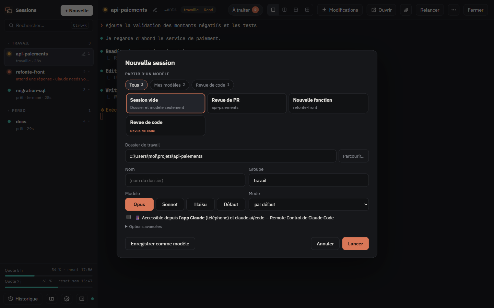
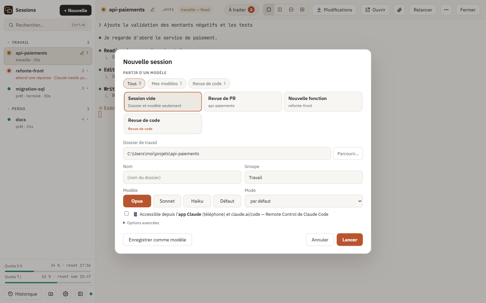
Synchro Mac ↔ Windows
Commencez sur le Mac, continuez sur le PC
Un code à saisir une fois sur chaque machine. « Reprendre » sur l'autre machine continue la conversation avec tout son contexte. Tout est chiffré de bout en bout : le serveur ne voit que des octets illisibles. Comment faire
Ce qui peut vous suivre (au choix)
CLAUDE.md, règles, skills, agents et commandes.Mêmes sessions partagées, mêmes plugins et extensions. Une machine qui n'a pas un plugin synchronise ce qu'elle a, sans rien perdre.
Elles voyagent avec leur plugin : sans lui, ses skills manqueraient. Installez le plugin, l'extension suit.
Ce qui peut guider ou faire agir Claude (règles, skills, agents, plugins) attend votre accord. Chaque changement reçu est noté et se restaure d'un clic.
AES-256-GCM, clés dérivées de votre code. Un ordinateur perdu ? Changez de code : l'ancien espace est effacé du serveur.
Fonctions
Tout ce qu'il faut pour travailler en parallèle
Chaque session est un vrai Claude Code, avec vos réglages, vos hooks, vos plugins et vos serveurs MCP. Claude Sessions les réunit et les garde en vie.
État en direct
Orange quand Claude travaille, rouge quand il attend votre réponse, vert quand c'est fini. Notification, son, rappels.
Sessions persistantes
Fermer la fenêtre ne coupe rien. Après un redémarrage, chaque session revient avec sa conversation.
Un worktree par session
Chaque session a sa branche ; fusion en un clic quand c'est prêt.
Panneau Modifications
Fichiers modifiés, diff coloré, annuler un fichier, commit avec message proposé.
Groupes
Créez, renommez, supprimez des groupes ; glissez-y vos sessions. Épinglez les plus importantes.
Palette de commandes
Ctrl/⌘+K : sessions, conversations, modèles, prompts et actions rangés par sections ; > pour les commandes, / pour les prompts.
File d'attente et prompts
Des demandes qui partent quand Claude a fini, une bibliothèque de prompts, un envoi à plusieurs sessions.
Demandes programmées
Un prompt, ou un modèle lancé, à heure fixe : une fois, ou certains jours.
La file suit votre quota
Pause près de la limite des 5 h, reprise à la réinitialisation ; les sessions coupées reprennent avec « continue ».
Mémoire des sessions
Chaque session laisse un résumé que la suivante reçoit dans le même projet. Ou claude-mem, installé et réparé tout seul.
Voir et corriger la mémoire
Cherchez ce que Claude retient, corrigez une fiche, ajoutez une note « À retenir », oubliez une session.
Fini le compactage en boucle
Toute la fenêtre du modèle, même si un réglage trop bas traîne dans settings.json, sans le modifier.
Images et fichiers
Glissez ou collez une capture : jointe au message, avec un aperçu propre à chaque session.
Ramener vos terminaux
Les sessions Claude ouvertes dans des terminaux apparaissent dans l'app : déplacez-les ou copiez-les.
Depuis votre téléphone
Une case : la session se pilote depuis l'app Claude et claude.ai/code (Remote Control), sans port ouvert.
Verrouillage
Masquez une session sensible par mot de passe : elle continue de tourner, son contenu reste caché.
Mises à jour automatiques
Téléchargées en arrière-plan, installées au redémarrage ; vos sessions reviennent seules.
Clair, sombre, deux langues
Suit Windows / macOS en direct. Interface en français ou en anglais.
Réglages
Chaque option, onglet par onglet
L'engrenage en bas de la barre latérale, ou Ctrl/⌘+,. Le guide en détail
| Onglet | Options |
|---|---|
| Général |
|
| Terminal |
|
| Notifications |
|
| Sécurité |
|
| Extensions |
|
| Modèles, Prompts, Programmées |
|
| Mémoire |
|
| Synchronisation |
|
| Diagnostic, Journaux, À propos |
|
Télécharger
Installez en une minute
Seul prérequis : Claude Code installé (la commande claude). Node.js n'est pas nécessaire.
Claude-Sessions-Setup.exe
Mac Apple SiliconM1 à M4 : ouvrir, glisser dans Applications.Claude-Sessions-arm64.dmg
Mac IntelOuvrir, glisser dans Applications.Claude-Sessions-x64.dmg
Windows : « Windows a protégé votre ordinateur » → Informations complémentaires → Exécuter quand même.
macOS : Réglages Système › Confidentialité et sécurité › Ouvrir quand même (ou
xattr -cr "/Applications/Claude Sessions.app"). Les mises à jour suivantes s'installent ensuite sans mot de passe.
Ou en ligne de commande
git clone https://github.com/khalilbenaz/claude-sessions-manager.git cd claude-sessions-manager npm ci && npm install -g . csm install # démarrage automatique + raccourci csm # ouvre la fenêtre
Sécurité
Local, isolé, sans télémétrie
Vos sessions ne quittent pas votre machine : seul Claude Code parle à l'API d'Anthropic, comme d'habitude. La synchro est désactivée par défaut.
Serveur local uniquement
Écoute sur 127.0.0.1, jeton aléatoire exigé, jeton séparé pour les hooks, contrôle de l'en-tête Host.
Fenêtre isolée
Isolation de contexte et bac à sable, aucun accès Node côté page, navigation verrouillée.
CSP stricte
Aucun script inline ni ressource externe ; les polices sont intégrées, les liens s'ouvrent dans votre navigateur.
Extensions sans code
Format déclaratif : les vues sont affichées en texte, jamais exécutées. Les options passées à Claude sont filtrées.
Synchro chiffrée
AES-256-GCM sur votre machine, données authentifiées ; le serveur ne garde qu'une empreinte du code.
Builds publics
Les installeurs sont construits par GitHub Actions à partir du code publié, jamais sur un poste.
Questions
Questions fréquentes
Que devient une session quand je quitte l'app ?
Elle continue de tourner. « Quitter et arrêter toutes les sessions » les arrête ; elles reviendront au prochain lancement.
Mes réglages Claude Code sont-ils conservés ?
Oui : chaque session lance votre claude habituel, avec votre configuration, vos hooks, vos plugins et vos serveurs MCP.
Puis-je passer d'un ordinateur à l'autre ?
Oui : Réglages › Synchronisation › « Créer un code » sur la première machine, « J'ai déjà un code » sur les autres. « Reprendre » continue la conversation là où elle en était.
Une extension peut-elle exécuter du code ?
Non. Elle décrit des modèles, des prompts et un affichage ; c'est Claude, dans votre session, qui fait le travail avec ses autorisations habituelles.
Le coût affiché est-il facturé ?
Non : c'est une estimation aux tarifs publics de l'API, indicative. Avec un abonnement Claude, il est inclus.
Est-ce un produit Anthropic ?
Non. Projet libre et indépendant. « Claude » et « Claude Code » sont des marques d'Anthropic.